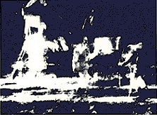
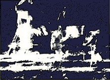

LATE CITY EDITION
VOL.CXVII.No.40,721
© 1900 The New York Times Company
NEW YORK, MONDEY, JULY 21, 1969
X
10 CENTS
Men Walk On Moon
Astronauts Land On Plain; Collect Rocks, Plant Flag
Houston, Monday, July 21--Men have landed and walked on the moon.
Two Americans, astronauts of Apollo 11, steered their fragile four-legged lunar module safely and smoothly to the historic landing yesterday at 4:17:40 P.M., Eastern daylight time.
Neil A. Armstrong, the 38-year-old civilian commander, radioed to earth and the mission control room here:
"Houston, Tranquility Base here. The Eagle has landed."
The first men to reach the moon--Mr. Armstrong and his co-pilot, Col. Edwin E. Aldrin, Jr. of the Air Force--brought their ship to rest on a level, rock-strewn plain near the southwestern shore of the arid Sea of Tranquility.
About six and a half hours later, Mr. Armstrong opened the landing craft's hatch, stepped slowly down the ladder and declared as he planted the first human footprint on the lunar crust:
"That's one small step for man, one giant leap for mankind."
His first step on the moon came at 10:56:20 P.M., as a television camera outside the craft transmitted his every move to an awed and excited audience of hundreds of millions of people on earth.
Tentative Steps Test Soil
Mr. Armstrong's initial steps were tentative tests of the lunar soil's firmness and of his ability to move about easily in his bulky white spacesuit and backpacks and under the influence of lunar gravity, which is one-sixth that of the earth.
"The surface is fine and powdery," the astronaut reported. "I can pick it up loosely with my toe. It does adhere in fine layers like powdered charcoal to the sole and sides of my boots. I only go in a small fraction of an inch, maybe an eighth of an inch. But I can see the footprints of my boots in the treads in the fine sandy particles.
After 19 minutes of Mr. Armstrong's testing, Colonel Aldrin joined him outside the craft.
The two men got busy setting up another television camera out from the lunar module, planting an American flag into the ground, scooping up soil and rock samples, deploying scientific experiments and hopping and loping about in a demonstration of their lunar agility.
And people back on earth found the black-and-white television pictures of the bug- shaped lunar module and the men tramping about it so sharp and clear as to seem unreal, more like a toy and toy-like figures than human beings on the most daring and far- reaching expedition thus far undertaken.
During one break in the astronauts' work, President Nixon congratulated them from the White House in what, he said, "certainly has to be the most historic telephone call ever made."
"Because of what you have done," the President told the astronauts, "the heavens have become a part of man's world. And as you talk to us from the Sea of Tranquility it required us to redouble our efforts to bring peace and tranquility to earth.
contined on Pages 2, col, 1
Today's 4.Part Issue of The Times
The Times's main supplement, every day, is the times2, featuring various
lifestyle columns. It was discontinued on 1 March 2010 but reintroduced on 11
October 2010 after discontinuation was criticised. Its regular features include a
puzzles div called Mind Games. Its previous incarnation began on 5 September 2005,
before which it was called T2 and previously Times 2. Regular features include
columns by a different columnist each weekday. There was a column by Marcus du
Sautoy each Wednesday, for example. The back pages are
devoted to puzzles and contain
sudoku, "Killer Sudoku", "KenKen", word polygon puzzles, and a crossword
simpler and more concise than the main "Times Crossword".
The supplement contains arts and
lifestyle features, TV and radio listings and reviews.
During one break in the astronauts' work, President Nixon congratulated them from the White House in what, he said, "certainly has to be the most historic telephone call ever made."
"Because of what you have done," the President told the astronauts, "the heavens have become a part of man's world. And as you talk to us from the Sea of Tranquility it required us to redouble our efforts to bring peace and tranquility to earth.
"For one priceless moment in the whole history of man all the people on this earth are truly one--one in their pride in what you have done and one in our prayers that you will return safely to earth."
Mr. Armstrong replied:
"Thank you Mr. President. It's a great honor and privilege for us to be here representing not only the United States but men of peace of all nations, men with interests and a curiosity and men with a vision for the future."
Mr. Armstrong and Colonel Aldrin returned to their landing craft and closed the hatch at 1:12 A.M., 2 hours 21 minutes after opening the hatch on the moon. While the third member of the crew, Lieut. Col. Michael Collins of the Air Force, kept his orbital vigil overhead in the command ship, the two moon explorers settled down to sleep.
Outside their vehicle the astronauts had found a bleak world. It was just before dawn, with the sun low over the eastern horizon behind them and the chill of the long lunar nights still clinging to the boulders, small craters and hills before them.
Colonel Aldrin said that he could see "literally thousands of small craters" and a low hill out in the distance. But most of all he was impressed initially by the "variety of shapes, angularities, granularities" of the rocks and soil where the landing craft, code-named Eagle had set down.
The landing was made four miles west of the aiming point, but well within the designated area. An apparent error in some data fed into the craft's guidance computer from the earth was said to have accounted for the discrepancy.
Suddenly the astronauts were startled to see that the computer was guiding them toward a possibly disastrous touchdown in a boulder-filled crater about the size of a football field.
Mr. Armstrong grabbed manual control of the vehicle and guided it safely over the crater to a smoother spot, the rocket engine stirring a cloud of moon dust during the final seconds of descent.
Soon after the landing, upon checking and finding the spacecraft in good condition, Mr. Armstrong and Colonel Aldrin made their decision to open the hatch and get out earlier than originally scheduled. The flight plan had called for the moon walk to begin at 2:12 A.M.
Flight controllers here said that the early moon walk would not mean that the astronauts would also leave the moon earlier. The lift-off is scheduled to come at about 1:55 P.M. today.
Their departure from the landing craft out onto the surface was delayed for a time when they had trouble depressurizing the cabin so that they could open the hatch. All the oxygen in the cabin had to be vented.
Once the pressure gauge finally dropped to zero, they opened the hatch and Mr. Armstrong stepped out on the small porch at the top of the nine-step ladder.
Some say the world some say in ice.
From what I’ve tasted of desire
I hold with those who favor fire.
But if it had to perish twice,
I think I know enough of hate
To say that for destruction ice
Is also great
And would suffice.

 
